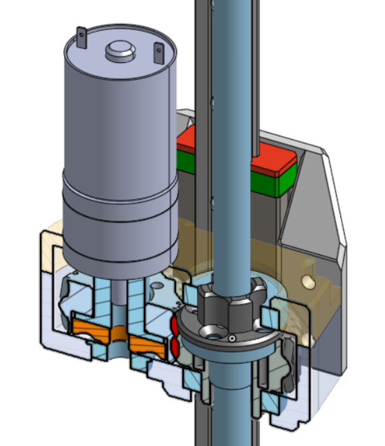

La Machine des Jeux de Génie c'est:
Étant l’une des deux épreuves de longue haleine, la Machine est un défi parmi les plus difficiles à relever lors des Jeux de Génie. Le but : fabriquer une machine robotique intelligente qui surmontera les diverses épreuves d’un parcours prédéterminé en un temps donné. Durant les quatre mois précédant l’évènement, les équipes devront y mettre temps, ingéniosité et créativité afin de respecter les attentes des juges tout en respectant les devis. Les personnes participantes devront mettre à profit leurs connaissances acquises en ingénierie en plus d’administrer un budget consacré à l’achat des ressources afin de concrétiser leurs idées devant public et médias.
Plus techniquement, la machine des Jeux de Génie c'est un défi d'ingénierie où le but est de créer une solution robotique pendant 4 mois qui permet d'accomplir le défi proposé.
Sommaire


Mes réalisations:
- Conception 3D du système de levage
- Conception du système de propulsion
- Conception du système d'aspiration des balles
- Intégration des sous-systèmes mécaniques
Système de levage:
Le système de levage permet d'embarquer les deux robots mobiles sur la plateforme du terrain. Le système est composé d'une vis sans fin immobile ainsi qu'un rail linéaire pour le guidage. Le moteur fait tourner l'écrou autour de la vis sans fin et transmet le mouvement de montée et de descente.
Système de propulsion:
Pour la propulsion, les deux robots mobiles sont équipés de roues omnidirectionnelles faites maison actionnés par des petits moteurs Polulu. Ces roues permettent la libertée de mouvement dans toutes les directions avec vitesse et contrôle.
Système d'aspiration des balles:
Pour aspirer les balles, un aspirateur Dyson a été acheté brisée. Je l'ai réparée et j'ai utilisé la sortie d'air pour souffler à l'entrée des balles par effet venturi. Un clapet sur le dessus permet de changer entre grande vitesse d'aspiration et grande force de poussée, une fois une balle entrée dans le tuyau. Des capteurs lumineux à l'entrée et à la sortie des balles permettent d'automatiser l'aspiration d'une seule balle à la fois.
Intégration des sous-systèmes mécaniques:
Une plaque d'acrylique fait office de base pour le robot principal. Le système d'aspiration, les mécanismes de montée et de propulsion, l'électronique et tous les capteurs ont étés rassemblés en configurés pour rentrer dans le plus petit espace possible en lien avec la contrainte d'esapce.